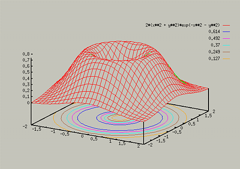
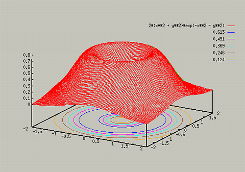

When you look at the previous graph, it seems that the resolution of
the graph is not very high. To decrease the amount of choppiness in
the graph, you need to increase the precision used. This can be done
for 2D plots by the set samples command, and for 3D plots by
set isosamples command. You will almost always have to use
this for 3D plots, because the default sampling rate is very low. The
syntax of the command is:
- set isosamples x_rate, y_rate
The default is for both rates to be set to 10.
For example, typing the following yields:
- set isosamples 30, 30
- splot [-2:2] [-2:2] 2*(x**2 + y**2)*exp(-x**2 - y**2)
- set isosamples 100, 100
- replot


It is important to note that the higher you set the isosamples, the
longer it will take to create the graph. In most cases, you won't want
to set the sample size larger thant 100.
Table of Contents - Previous - Hidden 3D view - Next - Adding Contour Lines
College of Natural Sciences /
University of Northern Iowa /
manager@cns.uni.edu
Copyright © 1996 College of Natural Sciences. All Rights Reserved.
Last Modified: 10/29/96